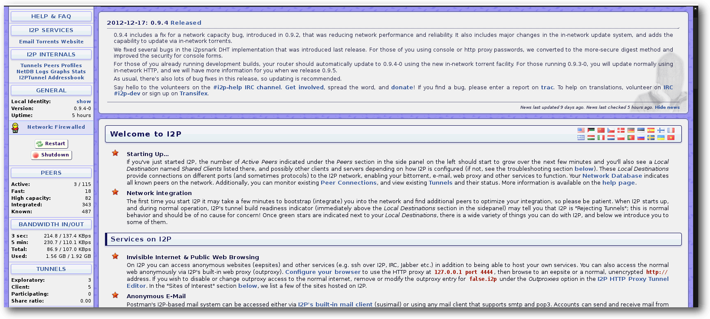

freiesMagazin Mai 2013
(ISSN 1867-7991)
Topthemen dieser Ausgabe
openSUSE 12.3Sechs Monate ist es her, dass die von der Gemeinschaft erstellte openSUSE-Distribution eine Aktualisierung erfuhr. Nun liefern die Entwickler die Version 12.3 aus und versprechen das Produkt nicht nur aktualisiert, sondern auch massiv verbessert zu haben. (weiterlesen)
I2P – Ein anynomes P2P-Netzwerk
Anonymität im Internet ist ein sehr aktuelles Thema, welches nicht nur in verschiedenen autoritäten Staaten wie China oder Iran von immenser Bedeutung ist. Der folgende Artikel stellt eine Möglichkeit vor, sich mit relativ großer Anonymität in einem Darknet, also einem Netz im Netz, zu bewegen. (weiterlesen)
Zum Index
Inhalt
Linux allgemeinopenSUSE 12.3
Der April im Kernelrückblick
Anleitungen
I2P – Ein anynomes P2P-Netzwerk
Hilfe leisten mit Reverse VNC
Software
Dateiüberprüfung mit iWatch – Einbruchserkennung in Echtzeit
Community
Rezension: Apps mit PhoneGap entwickeln
Rezension: Java-Komponenten
Magazin
Editorial
Leserbriefe
Veranstaltungen
Vorschau
Konventionen
Impressum
Zum Index
Editorial
Änderungen im Magazin
Diesen Monat gibt es bei freiesMagazin einige Veränderungen, die wahrscheinlich nur wenigen Lesern auffallen werden. Nichtsdestotrotz sind sie wichtig, da sie das Magazin verbessern. Zum einen haben wir unsere interne Organisation optimiert, sodass die Artikel der Autoren von der Redaktion in einer eigenen Meta-Sprache abgelegt werden. Auf die Art kann ein simples Skript die Artikel korrekt setzen, ohne dass jemand manuell diese mühsame (und mitunter eintönige) Arbeit erledigen muss. Die Rolle des „Setzers“ fällt damit bei freiesMagazin weg, die des „Layouters“ bleibt natürlich erhalten. Aber auch beim Layout wurden einige Optimierungen vorgenommen. Auf der TeX-Tagung in Gießen (siehe freiesMagazin 04/2013 [1]) war freiesMagazin ebenfalls vertreten und berichtete über einige Probleme mit dem Layout. Bei der Diskussion kam auch der Begriff des registerhaltigen Satzes auf: Zitat: „Praktisch wirkt sich Registerhaltigkeit dahin aus, dass alle Elemente des Satzspiegels, insbesondere die Zeilen eines Buches exakt übereinander liegen.“ [2] Dies haben wir nun umgesetzt, sodass wir weniger Probleme und Anpassungschwierigkeiten mit den Abständen zwischen Absätzen und Boxen haben. Das heißt, wenn Sie freiesMagazin doppelseitig ausdrucken und gegen das Licht halten würden, wären alle Zeilen auf exakt der gleichen Höhe. Dies fällt Dank des dreispaltiges Satzes aber bereits beim Anschauen des PDFs auf, da benachbarte Zeilen in den Spalten auf einer Höhe liegen sollten. Auf die HTML- und EPUB-Version haben diese Änderungen natürlich keine Auswirkung, da beide Versionen einen dynamischen Textfluss haben und somit keinem starren Layout unterworfen sind.Artikelarmut
Zusätzlich sehen Sie an dieser Ausgabe, dass es immer weniger Artikel werden, die wir Ihnen präsentieren können. Für Juni haben wir glücklicherweise noch ein paar, aber für die Sommermonate danach sieht es sehr düster aus. Wenn Sie helfen wollen, schauen Sie auf die Themenwunschliste [3] oder überlegen sich selbst ein Thema, über das Sie schreiben wollen. Ihre Ideen und Artikelentwürfe können Sie dann einfach an[1] http://www.freiesmagazin.de/freiesMagazin-2013-04
[2] https://de.wikipedia.org/wiki/Register_(Druck)
[3] http://www.freiesmagazin.de/artikelwuensche
Das Editorial kommentieren
Zum Index
openSUSE 12.3
von Mirko Lindner Sechs Monate ist es her, dass die von der Gemeinschaft erstellte openSUSE-Distribution eine Aktualisierung erfuhr. Nun liefern die Entwickler die Version 12.3 aus und versprechen das Produkt nicht nur aktualisiert, sondern auch massiv verbessert zu haben. Redaktioneller Hinweis: Der Artikel „OpenSuse 12.3“ erschien erstmals bei Pro-Linux [1].Neuerungen und Verbesserungen der Anwenderdistribution
Nach Aussagen der Ersteller bietet die neue openSUSE 12.3 alles, was zeitgemäße Linux-Benutzer benötigen. Das System sei demnach „das Beste, was freie Software anzubieten hat“, gepaart mit „der einzigen „Grünen Quelle“ – stabil, freundlich und zum Spaß“. Mittlerweile gehört es zum guten Ton jedes Distributors, das eigene Produkt in verschiedenen Editionen auszuliefern. So kommt auch openSUSE 12.3 in der frei herunterladbaren Version in mehreren Editionen. Neben einer 4,7 GB großen DVD, die alle Pakete in sich vereint, offeriert das Team auch spezielle Abbilder mit dedizierten Umgebungen oder Abbilder für den Einsatz als Rettungssystem, respektive zur Installation über das Netzwerk. Seit der 9er-Reihe unterstützt Suse/openSUSE neben der x86- auch die x86_64-Architektur. Diese Unterteilung behält das Team weiterhin bei und gliedert die Downloads auch nach der gewünschten Architektur. openSUSE liefert auch mit der neuen Version einen gewohnt großen Umfang an Paketen. Die Distribution setzt auf dem Kernel 3.7 auf und bietet dementsprechend auch die Vorteile der aktuellen Version von Linux. So können Kernel-Module nun auch kryptografisch signiert werden, was unter anderem für die Unterstützung von UEFI Secure Boot nötig ist. Die weitere Basis von openSUSE 12.3 stellt glibc in der Version 2.17 dar. Gegenüber der letzten Version 2.15, die in openSUSE 12.2 noch eingesetzt wurde, bietet die neue Version unter anderem eine Unterstützung der 64-Bit-ARM-Architektur (AArch64) und des-x32 ABI. Resultierend aus den Änderungen bietet die neue openSUSE auch eine bessere Unterstützung von UEFI und experimentelle Unterstützung von Secure Boot. Bei diesem Test funktionierte die Neuimplementierung relativ gut, auch wenn noch diverse manuelle Eingriffe notwendig waren. So erkennt beispielsweise Yast nicht automatisch, ob das System Secure Boot nutzt, und installiert standardmäßig einen unsignierten Bootloader. Will man eine signierte Variante des Loaders haben, muss der Anwender diesen manuell bei der Installation auswählen. In Anbetracht der Tatsache, dass die Technologie selbst von den Erstellern und dem Kernel-Team als experimentell bezeichnet wird, ist hier noch Verbesserungspotenzial vorhanden.Der Startbildschirm der Installation.
Das traditionelle System-V-Init wurde in der neuen Version von openSUSE durch Systemd in der Version 195 ersetzt. Nachdem Systemd bereits vor über einem Jahr eine eigene Log-Implementierung erhielt, kann der Daemon nun in der vorliegenden Version weitere Dienste ersetzen und beispielsweise für die Rotation der Logs eingesetzt werden. Darüber hinaus setzt openSUSE auf den X-Server 1.13 auf, der unter anderem über eine Infrastruktur verfügt, die die Zuschaltung von zur Laufzeit angesteckter oder zugeschalteter Grafikhardware verbessert.
Installation und Konfiguration
Das Booten oder die Installation der DVD klappte bei allen getesteten Systemen anstandslos. Funktionell gesehen unterlag die Auswahl der möglichen Installationsmethoden keinerlei Änderung. So bietet openSUSE immer noch eine automatische Installation wahlweise mit deaktiviertem ACPI oder in einer sicheren Umgebung, eine manuelle Installation, Rettungssystem oder Speicher- oder Firmwaretest zur Auswahl an. Darüber hinaus lassen sich bereits beim ersten Booten der DVD die Sprache und die zu verwendende Auflösung bestimmen. Fast schon obligatorisch änderte der Hersteller auch in der neuen Version das Aussehen des Bootscreens. Das Hellgrün musste nun einem durchaus ansprechenden dunkelgrün-grauen Ton weichen. Die Installation birgt keine großen Überraschungen. Nach der Bestätigung des Lizenztextes, der zugleich mit der Einstellung der Sprache und Tastatur erscheint, kommt man zur Festlegung des Datums und der zu installierenden Umgebung. Wie gehabt ist KDE weiterhin der Standard-Desktop. Allerdings lassen sich bereits in der Übersicht GNOME, XFCE, LXDE, ein minimales X-Window-System oder der Textmodus wählen.Übersicht der Installation.
Nach der Auswahl der Sprache schlägt openSUSE alle nötigen Schritte vor und spart vor allem Anfängern lange Handbuchkonsultationen. Neu ist unter anderem die Möglichkeit, die Installation des Bootloaders direkt in der Installationsübersicht zu bestimmen. Darüber hinaus lassen sich auch Add-on-Produkte auf separaten Medien bereits beim ersten Start einbinden. Wird ein Online-Medium hinzugefügt, beginnt die Distribution mit der Einrichtung von Netzwerkeinstellungen, sodass noch vor der eigentlichen Installation die Informationen aus dem Internet geladen werden können. Je nach Verbindung kann diese Prozedur allerdings eine Weile dauern. Ein Vorteil dieser Vorgehensweise ist, dass funktionelle Fehler in der Installation vom Distributor noch vor der eigentlichen Installation durch das Hinzufügen eines Patches beseitigt werden können.
Festplattenpartitionierung: Der Expertenmodus.
Die anfängliche Konfiguration des Systems besteht aus der Auswahl des Installationsmodus, der Tastaturbelegung, der Maus und der Festlegung der Partitionen, der zu installierenden Pakete, der Sprache, der Wahl des Bootloaders und der Zeitzone sowie des Default-Runlevels. Systemprofis und Linux-Kenner dürfen selbstredend ihre Einstellungen manuell tätigen. Der Rest der Installation gleicht, von kleineren Ausnahmen abgesehen, der von openSUSE 12.2.
Grobe Auswahl des Standarddesktops.
Bei der Konfiguration sticht, wie auch bei anderen Bereichen, die grafische Änderung der Eingabemasken ins Auge. War sie in der alten Version noch in hellgrünen Farben gehalten, passten nun die Entwickler auch die Konfigurationsdialoge an die neue, grau-grüne Farbgebung an. Ansonsten unterlag auch die eigentliche Konfiguration nur wenigen Änderungen und wurde nur im Detail verändert. So findet sich beispielsweise die Konfiguration der Firewall nicht mehr in der Übersicht bei der Installation des Netzwerks. Im Übrigen bereitete das Netzwerk doch etliche Probleme. So wurde auf einem der Laptops beispielsweise der Netzwerkmanager nach dem Start nicht gestartet. Auf einem anderen System kam keine Konnektivität zustande und das System musste erst einmal neu gebootet werden. Ein drittes System wies dagegen Fehler bei der Konfiguration der standardmäßig eingeschalteten Firewall auf, was dazu führte, dass eine angeblich vorhandene Freigabe für sshd nicht eingerichtet wurde.
Mittels vordefinierter Paketgruppen kann die Auswahl verfeinert werden.
Grafische Oberfläche – KDE
Der Standard-Desktop unter openSUSE heißt weiterhin KDE. Die in der Version 4.10 vorliegende Umgebung wurde visuell an das neue Aussehen angepasst und kommt mit den wichtigsten Applikationen. Die Umgebung gestaltet sich aufgeräumt und wirkt recht elegant. Die Menüstruktur ist aufgeräumt und lässt kaum Wünsche offen. Einzig die etwas gewöhnungsbedürftigen und teils nichtssagenden Icons für manche Anwendungen im System-Tray verwirren.KDE 4.10 in openSUSE 12.3
Der Plasma-Desktop wurde in KDE 4.10 und damit auch openSUSE 12.3 weiter aufpoliert. So wird Qt Quick in den Plasma-Workspaces noch intensiver als zuvor genutzt. Die bereits in den früheren Versionen eingeführten Qt-Quick-Plasma-Komponenten, die eine standardisierte API-Implementation von Widgets mit dem nativen Plasma-Aussehen bereitstellen, wurden um neue Module ergänzt. Viele weitere Plasma-Komponenten wurden neu in Qt Quick konzipiert. Unter anderem setzen die Systemleiste, der Pager, Systembenachrichtigungen und die Wetterstation auf die neue Technologie auf. Zudem haben die KDE-Entwickler die Bildschirmsperre überarbeitet, die nun ebenfalls auf Qt Quick beruht. Dank der ebenfalls auf Qt Quick aufsetzenden Wallpapers-Engine ist es nun einfacher, animierte Desktophintergründe zu erstellen. Der Window-Manager KWin enthält nun eine Integration von Get Hot New Stuff (GHNS) [2],mit der zusätzliche Effekte und Skripte heruntergeladen und aktiviert werden können. Mit diesen lässt sich auch das Verhalten von KWin ändern. Der Window-Manager erkennt zudem auch unter Umständen, dass er in einer virtuellen Maschine läuft, und schaltet OpenGL-Compositing dann ein, wenn möglich. Bei diesem Test funktionierte das anstandslos. Das neue Anwendungsmenü, das in die neue Version der Umgebung Einzug hielt, ist bei openSUSE nicht aktiviert. Eine weitere Neuerung von KDE 4.10 stellt die überarbeitete Metadaten-Engine Nepomuk dar, die von vielen Fehlern befreit wurde und Dateien schneller und robuster indizieren soll. So bietet der neue Indexer unter anderem Filter an, die es ermöglichen, das Indizieren auf bestimmte Dateitypen zu begrenzen. Zudem liefert die Umgebung eine neue Anwendung zum Bereinigen von korrumpierten Daten in Nepomuk mit. Ein neuer Tags-kioslave erlaubt es, in jeder KDE-Applikation nach Tags zu suchen. Neu ist ebenfalls der Print-Manager, der unter anderem für die Einrichtung von Druckern und das Überwachen von Aufträgen verantwortlich zeichnet. Der Dateimanager Dolphin unterstützt nun auch die Anzeige von MTP-Geräten und macht damit das Transferieren von Daten auf Mobilgeräte einfacher. Zahlreiche Neuerungen gab es in den KDE-Kernanwendungen. Der Texteditor Kate unterstützt jetzt auch Python-Plugins, vordefinierte Farbschemen, weniger störende Benachrichtigungen und kommt mit einem Projektverwaltungs-Plugin daher. Die Terminal-Anwendung Konsole erhielt zwei Funktionen zurück: Das Drucken des Fensterinhalts und das Senden von Signalen. Daneben kann jetzt der Zeilenabstand geändert werden.
Neu in KDE 4.10: Anwendungsmenüs lassen sich ausblenden.
Zum weiteren Umfang der Umgebung unter openSUSE 12.3 gehören ferner Anwendungen wie Amarok oder Digikam, aber auch LibreOffice, GIMP und Firefox. Letzterer stellt weiterhin den Standardbrowser auch unter KDE dar und weist neben den üblichen Plugins für Flash und Java auch die openSUSE-Extentions in der Version 1.0.2 und Skype-Buttons für Kopete auf.
Installation von Updates unter KDE.
Weiterhin nicht im Lieferumfang der Distribution sind zahlreiche proprietäre Video-Codecs enthalten. Der Fairness halber sei allerdings erwähnt, dass dies nicht an openSUSE, sondern an lizenzrechtlichen Gründen liegt. Die Entwickler der Distribution lösen das Manko unter KDE allerdings recht elegant. So wird beispielsweise die Unterstützung von MP3 bereits beim ersten Update des Systems installiert. Dasselbe gilt auch für den Flash-Player. Grund hierfür stellt die in der Vergangenheit gefällte Entscheidung dar, nur noch freie und lizenzkonforme Software in den Lieferumfang der Distribution aufzunehmen. Das Dilemma von nicht unterstützten Video-Formaten lösen die Entwickler mit einem Hinweis beim Versuch, ein solches Format abzuspielen. Der Anwender wird dazu auf eine openSUSE-Seite geleitet, die eine automatische Installation aller benötigten Komponenten ermöglicht.
Yast-Modul zur Konfiguration von Samba.
Die Umgebung selbst verhält sich weitgehend souverän und ist gut konfiguriert. Als Icon-Theme kommt auch bei openSUSE 12.3 das Oxygen-Theme zum Einsatz. Auch das grafische Thema ist Standard. Hier hat der Hersteller lediglich die Farbgebung verändert. Ins Auge sticht allerdings der Login-Bildschirm, der nun erheblich edler aussieht als noch in den Versionen zuvor. Auch die Anbindung von beispielsweise Gtk+-Anwendungen unter KDE kann überzeugen. Startet man beispielsweise GIMP, unterscheidet sich die Applikation weder in der Farbgebung noch in der Erscheinung von anderen Anwendungen.
Grafische Oberfläche – GNOME
GNOME wird in openSUSE in der Version 3.6 ausgeliefert. Der Schwerpunkt der neuen Version lag laut Aussagen der Entwickler auf der Verbesserung der Umgebung. So erhielt die Aktivitätenübersicht der GNOME-Shell einige Änderungen. Es gibt nun einen Gitter-Button in der Startleiste (Dash), mit dem man schnell zu einzelnen Anwendungen wechseln kann. Die Eingabe von Suchbegriffen wird durch das Hervorheben der Suchleiste vereinfacht. Das Sperren des Bildschirms folgt nun dem Paradigma einer Jalousie, die vor dem Bildschirm heruntergezogen wird, und wurde direkt in die GNOME-Shell eingebaut. Der gesperrte Bildschirm zeigt eine praktische große Uhr, erlaubt aber auch das Anhalten und Ändern der Lautstärke, falls Audio abgespielt wird. Überdies werden auch Benachrichtigungen eingeblendet, was allerdings abschaltbar ist.openSUSE 12.3: GNOME.
Apropos Benachrichtigungen: Diesen wurde nun eine eigene Leiste am unteren Bildschirmrand spendiert, die aber nur eingeblendet wird, wenn man mit der Maus für einen Moment an den unteren Bildschirmrand fährt. Wenn die Leiste eingeblendet wird, überlappt sie sich nicht mit den Bildschirminhalten, sondern schiebt diese nach oben. Die Elemente in der Leiste wurden größer, klarer und verschieben sich nicht. Die Benachrichtigungen selbst können geschlossen werden, und einige davon bieten die Möglichkeit, direkt auf sie zu reagieren, beispielsweise durch Eingabe einer Antwort in ein Instant-Messaging-System. Wenn man mit einer Anwendung im Vollbildmodus arbeitet oder ein Spiel spielt, werden nur wichtige Nachrichten angezeigt, die anderen werden erst später präsentiert. Der Menüpunkt „Suspend“ wurde durch den Menüpunkt „Ausschalten“ ersetzt. Font Viewer und Disk Usage Analyzer wurden an GNOME 3 angepasst. Das Instant-Messaging-Programm Empathy erhielt ein neues Design, das die Darstellung von Kontakten konsistent mit der Anwendung Contacts macht. Der E-Mail-Client Evolution erhielt kleine Verbesserungen. Unter anderem werden HTML-E-Mails mit WebKit dargestellt. Der Dateimanager Files, ehemals Nautilus, erhielt eine stark verbesserte Suchfunktion, leichten Zugriff auf kürzlich benutzte Dateien, verbesserte Werkzeug- und Seitenleisten, bessere Menüorganisation und Optionen zum Verschieben oder Kopieren an einen ausgewählten Ort.
Installation von Updates unter GNOME.
Der GNOME-Desktop unter openSUSE gestaltet sich aufgeräumt und übersichtlich, was unter anderem an der Philosophie von GNOME liegt. Die Anbindung von GNOME-fremden Anwendungen wie Firefox, aber auch KDE-Applikationen kann ebenfalls als gelungen gewertet werden. Im Gegensatz zu vielen anderen Versionen von openSUSE fühlen sich die Anwendungen nicht mehr als Fremdkörper an, sondern integrieren sich nahtlos in die vorhandene Umgebung.
Yast passt sich der Umgebung an.
Unangenehm fällt allerdings die Integration von Multimedia-Formaten auf. Während unter KDE bereits beim ersten Update kostenlose, aber nicht freie Anwendungen, wie beispielsweise Flash oder MP3 in Gstreamer automatisch installiert wurden, klappte das unter GNOME nicht. Auch die vor allem für Anfänger nützlichen Hinweise erscheinen unter GNOME nicht. Im Gegenteil: So versuchte der Paketmanager beim Abspielen eines nicht unterstützten Formats zwar automatisch diverse Gstreamer-Plugins zu installieren, verhedderte sich aber dermaßen, dass er immer wieder mit einem Fehler ausstieg. Anwenderfreundlich ist das sicherlich nicht.
Server und andere Software
Neben der Möglichkeit, openSUSE auf einem Desktop zu betreiben, ermöglicht die Distribution auch die Installation als Server. Ob es angesichts des mittlerweile nicht mal zwei Jahre umfassenden Supportzeitraums sinnvoll ist, einen Unternehmensserver auf der Basis von openSUSE aufzusetzen, sei dahingestellt – auch wenn openSUSE 12.3 durch das Evergreen-Projekt möglicherweise länger gepflegt wird. Fast alle Server, die openSUSE 12.3 mit sich bringt, sind entweder vorkonfiguriert oder werden mit einer prinzipiell funktionsfähigen Installation geliefert. Besonders erfreulich für passionierte Heimnutzer und angehende Administratoren dürften die vielen Helfer in YaST sein. So hat der Hersteller im Lieferumfang des Paketes unter anderem Module für die Einrichtung eines DNS-, DHCP-, HTTP-, Kerberos-, OpenLDAP-, NFS-, NIS-, Samba-, Squid-, TFTP-Servers. Die Qualität der Werkzeuge unterscheidet sich allerdings erheblich. Während manche Module nur minimale Einstellungen ermöglichen, erlauben andere wiederum eine durchaus gelungene Konfiguration.Unsicherheit bei der Installation von fehlenden Codecs.
Eine Neuerung von openSUSE 12.3 stellt die Integration von MariaDB dar. Wie die Entwickler dazu schrieben, versprechen sie sich von der Umstellung einen besseren Support und eine offeneres Entwicklungsmodell. Für den Anwender ändert sich indes, abgesehen von den Unterschieden zwischen den zwei Systemen, nur wenig. So startet MariaDB ebenfalls unter dem Namen „mysql“ und speichert die Daten in derselben Verzeichnisstruktur wie MySQL.
Desktop der LXDE-Umgebung.
Ebenfalls zum Lieferumfang von openSUSE 12.3 gehören Xfce, das unter anderem über einen verbesserten Dateimanager verfügt, LXDE, E17, Sawfish und, neu, der awesome Window Manager. Alle Systeme können auf die neue Input-Methode Mozc zugreifen. Der GNU-Debugger gdb wurde auf Version 7.5 aktualisiert und PostgreSQL wird in der Version 9.2 mitgeliefert. In openSUSE 12.3 ist zudem die freie Büro-Suite LibreOffice in der Version 3.6 enthalten. Weitere Neuerungen sind aktuelle Versionen der bekannten Desktop-Anwendungen, wie beispielsweise GIMP, Amarok oder Rhythmbox.
Desktop der Xfce-Sitzung.
Fazit
Es ist kein Geheimnis, dass openSUSE eine einsteigerfreundliche Distribution ist. Diesem Anspruch wird auch das neueste Produkt gerecht. Der Distributor unterzog die Distribution zum wiederholten Male einem Facelifting und verbesserte manch einen Dialog sowie die Konfiguration des Systems. Vor allem aber die durchaus gelungene Integration von KDE sticht ins Auge und kann überzeugen. Weniger erfreulich sind die Probleme beim Netzwerk und die unfertige bzw. wenig durchdachte Installation von Multimedia-Codecs unter GNOME. Vor allem das erste Problem wirft einen Schatten auf openSUSE 12.3, erwartet man doch im Jahre 2013 bei der Netzwerkeinrichtung keine Probleme mehr. Waren die Installationsklippen allerdings umschifft, verhielt sich openSUSE 12.3 durchaus stabil. Die Verwaltung der Software erfolgte, zypper und den anderen Tools sei Dank, durchgehend flott. Das System wirkte dabei immer solide und bot wenig Raum zum Meckern. Mit einem sehr gut eingebundenen 3D-Desktop und aktuellen Anwendungen präsentiert sich openSUSE 12.3 auf dem neuesten Stand der Technik. Experimentierfreudige Anwender werden durch die schier grenzenlose Anzahl an Applikationen, die auf den Build-Servern von openSUSE gefunden werden können, jeden erdenklichen Wunsch erfüllt bekommen. openSUSE 12.3 ist deshalb weiterhin eine sehr gute Distribution und kann nicht nur Einsteigern empfohlen werden. Dank Yast stellt die Konfiguration der meisten Komponenten keine wirkliche Hürde für Anwender dar, die über ein Durchschnittsmaß an Systemkenntnis verfügen. Die freie Verfügbarkeit der Distribution ermöglicht zudem einen unverbindlichen Test. Links[1] http://www.pro-linux.de/artikel/2/1623/opensuse-123.html
[2] http://ghns.freedesktop.org/
| Autoreninformation |
| Mirko Lindner (Webseite) befasst sich seit 1990 mit Unix. Seit 1998 ist er aktiv in die Entwicklung des Kernels eingebunden und verantwortlich für diverse Treiber und Subsysteme für Linux und andere freie Plattformen. Daneben ist er einer der Betreiber von Pro-Linux.de. |
Diesen Artikel kommentieren
Zum Index
Der April im Kernelrückblick
von Mathias Menzer Basis aller Distributionen ist der Linux-Kernel, der fortwährend weiterentwickelt wird. Welche Geräte in einem halben Jahr unterstützt werden und welche Funktionen neu hinzukommen, erfährt man, wenn man den aktuellen Entwickler-Kernel im Auge behält.Linux 3.9 – Entwicklung
Bereits in der Veröffentlichungsmail zu 3.9-rc6 [1] äußerte Torvalds die Absicht, den Entwicklungszyklus nach -rc7 zu beenden. Die Entwicklung hatte sich zu diesem Zeitpunkt bereits beruhigt und wies in erster Linie kleinere Korrekturen auf. Ein Problem mit der Speicherverwaltung sorgte dann jedoch für etwas Wirbel, in erster Linie, weil er sich nur unter 32-Bit-Systemen mit aktivierter PAE-Erweiterung (Physical Address Extension [2]) zeigte. Die Fehlerbeseitigung hierfür wanderte in den -rc7 [3], der ansonsten aber recht unspektakulär blieb. Entgegen der ursprünglichen Ankündigung gab es dann doch noch eine achte Entwicklerversion [4] da nun noch einige Änderungen zusammengekommen waren. Zwar traten keine großen Probleme mehr auf, doch einige Reverts, Rücknahmen zuvor eingepflegter Änderungen, und Aufräumarbeiten ließen Torvalds zurückhaltend werden. So kam Linux 3.9 dann mit einer Woche „Verspätung“ und nur 80 Änderungen gegenüber dem -rc8 [5].Linux 3.9 – Release
Die Entwicklungszeit für Linux 3.9 betrug 70 Tage und war damit genau so lang wie die des Vorgänger 3.8. Die Zahl der Änderungen war zwar insgesamt geringer und deren Umfang hielt sich in einem vergleichbaren Rahmen, doch was hat die neue Inkarnation des Linux-Kernels nun zu bieten? Zwei neue Architekturen sind mit an Bord. So läuft der Linux-Kernel künftig auf ARC700, 32-Bit-RISC-Prozessoren [6], die für den Einsatz in Unterhaltungsgeräten wie TV-Set-Top-Boxen vorgesehen sind. Nummer Zwei findet sich ebenfalls im Embedded-Bereich wieder: Metag unterstützt Prozessoren, die eine Vielzahl von Möglichkeiten bieten. Sie verfügen über einen Befehlssatz für digitale Signalverarbeitung und beherrschen von Haus aus Multithreading. Dies ermöglicht das zeitgleiche Ausführen mehrerer Betriebssysteme, sodass Einsatzszenarien zum Beispiel als DAB-Empfänger [7] denkbar sind, in denen mehrere Threads Echtzeitbetriebssysteme bedienen, die das Decoding von Audio- oder Video-Datenströmen erledigen, während parallel dazu ein Linux-System das Benutzerinterface betreibt und die Netzwerk-Schnittstelle verwaltet. Keine eigene Architektur, jedoch als eigene Plattform läuft „Goldfish“. Hier bei handelt es sich um einen Emulator für Android, inklusive simuliertem Prozessor, Batterie, Audio, Grafik und Speicherkarte. Dies dürfte in erster Linie für Android-Entwickler von Interesse sein, allerdings erst wenn der Goldfisch den Staging-Bereich verlassen hat und von den Entwicklern als stabil angesehen wird. Btrfs unterstützt nun die RAID-Level 5 und 6 [8], Verbände mit mehreren Festplatten, die sowohl für kürzere Zugriffszeiten als auch Datensicherheit gedacht sind. Die Defragmentierung in Btrfs hatte bisweilen das Problem, dass in Schnappschüssen, die Speicherblöcke gemeinsam mit anderen nutzen, diese gemeinsame Nutzung durch die Defragmentierung unterbunden wird und dadurch insgesamt mehr Speicher benötigt werden würde. Eine Änderung behebt nun dieses Problem, sodass künftig Defragmentierungen keine negativen Auswirkungen mehr auf die Platzspareigenschaften der Btrfs-Snapshot haben. Eine Ergänzung des Device Mappers [9] soll die Zugriffe auf blockorientierte Geräte, in erster Linie versteht man unter dem Begriff Festplatten, optimieren und beschleunigen. Hierzu werden kleinere und schnellere Datenträger – der Gedanke an SSDs drängt sich hier geradezu auf – als Zwischenspeicher genutzt, die dann bestimmte Teile des auf dem langsameren Datentäger liegenden Dateisystems übernehmen. „dm-cache“, so lautet der Name der Ergänzung, regelt die Verteilung der Daten im Hintergrund und soll sich über Regeln steuern lassen. Ein weiterer Energiesparmodus wurde mit Linux 3.9 eingeführt. „Suspend-freeze“ friert laufende Prozesse ein, schaltet so viele Geräte wie möglich ab und versetzt den Prozessor in den Leerlauf. Das scheint zuerst einmal nicht sehr energieeffizient, ist jedoch auf Systemen, die Suspend-to-RAM (Bereitschaftsmodus [10]) nicht beherrschen oder über einen Prozessor mit sehr niedriger Energieaufnahme im Leerlauf verfügen, eine durchaus sinnvolle Alternative. Unter den kleineren Änderungen ist beispielsweise eine Funktion zum Laden und Speichern der Konfiguration für das make-Target menuconfig (siehe „Selbstgebacken 3: make“, freiesMagazin 05/2012 [11]), eine Neuerung, die in erster Linie Nutzern zugute kommt, die häufig unterschiedliche Kernel-Konfigurationen benötigen.Menuconfig verfügt nun über Optionen zum Speichern und Laden von Kernel-Konfigurationen.
Links
[1] https://lkml.org/lkml/2013/4/8/9
[2] https://de.wikipedia.org/wiki/Physical_Address_Extension
[3] https://lkml.org/lkml/2013/4/14/107
[4] https://lkml.org/lkml/2013/4/21/89
[5] https://lkml.org/lkml/2013/4/28/69
[6] https://de.wikipedia.org/wiki/Reduced_Instruction_Set_Computer
[7] https://de.wikipedia.org/wiki/Digital_Audio_Broadcasting
[8] https://de.wikipedia.org/wiki/RAID
[9] https://de.wikipedia.org/wiki/Device_Mapper
[10] https://de.wikipedia.org/wiki/Bereitschaftsbetrieb
[11] http://www.freiesmagazin.de/freiesMagazin-2012-05
| Autoreninformation |
| Mathias Menzer (Webseite) wirft gerne einen Blick auf die Kernel-Entwicklung, um mehr über die Funktion von Linux zu erfahren. |
Diesen Artikel kommentieren
Zum Index
I2P – Ein anynomes P2P-Netzwerk
von Thomas Schellenhof Anonymität im Internet ist ein sehr aktuelles Thema, das nicht nur in verschiedenen autoritäten Staaten wie China oder Iran von immenser Bedeutung ist. Der folgende Artikel stellt eine Möglichkeit vor, sich mit relativ großer Anonymität in einem Darknet [1], also einem Netz im Netz, zu bewegen.Allgemeines
I2P [2] („Invisible Internet Project“) ist eine anonyme, über Peer-to-Peer verteilte Kommunikationsschicht, die dafür entworfen wurde, jedes herkömmliche Protokoll, genauso wie traditionell verteilte Anwendungen zu unterstützen. I2P weist einige Gemeinsamkeiten mit verwandten Projekten wie GNUnet [3], Freenet [4] oder Tor [5] auf, ist aber ein eigenständiges System. Innerhalb des I2P-Netzwerkes ist es möglich, Dienste wie zum Beispiel E-Mail, IRC-Chat, Surfen im Internet oder Filesharing anonym zu nutzen. Letzteres ist sogar ausdrücklich erwünscht. Dies steht im Gegensatz zu dem populäreren Netzwerk Tor, in dem Filesharing aus Gründen der Performanz eher verpönt ist. In diesem Artikel soll I2P kurz vorgestellt und erklärt werden, wie man das System korrekt aufsetzen kann. Entgegen der weit verbreiteten Meinung, dass Anonymität nur etwas für Kryptographie-erprobte Nerds sei, bedarf es jedoch keiner spezifischen Fachkenntnisse, um einen I2P-Knoten einzurichten. Es müssen lediglich einige Hinweise beachtet werden. Dieser Artikel kann und will nicht in allen Details auf alle Parameter und Konfigurationsmöglichkeiten eingehen, da er lediglich die Grundlagen vermitteln möchte.Vokabular
Bevor man ein wenig tiefer in das I2P-Universum eintaucht, empfiehlt es sich, einige grundlegende Begriffe zu verstehen:- I2P-Router/I2P-Node/I2P-Knoten:
- Das alles bezeichnet einen Rechner, auf dem eine I2P-Instanz läuft.
- Eepsite:
- Eine Eepsite ist das I2P-Äquivalent zu einer Webseite im Internet. Natürlich erschwert I2P die Auffindung des Urhebers einer solchen Eepsite, womit anonymes Webhosting möglich ist. Zu beachten ist, dass Eepsites nicht aus dem normalen Internet zu erreichen sind. Sie existieren nur innerhalb des I2P-Netzes.
- Peer:
- Ein Peer ist ein Teilnehmer des Netzwerkes.
Geschichte und Funktionsweise
I2P startete im Februar 2003 als Fork von Freenet, um dieses um alternative Transports zu erweitern. Im August 2003 wurde der Quelltext in Version 0.1 veröffentlicht. Im März 2013 ist I2P bei Version 0.95 angelangt. I2P ist ein anonymisierendes Netzwerk, welches identitätskritischen Anwendungen eine einfache Schicht zur sicheren Kommunikation bietet. Alle Daten sind in mehreren Schritten verschlüsselt und das Netzwerk ist sowohl verteilt als auch dynamisch, ohne vertraute Parteien. Es existieren viele Anwendungen, die über I2P laufen, unter anderem E-Mail, P2P und IRC. Das Netzwerk selbst ist noch nicht zur sicheren Nutzung freigegeben und sollte nicht von Leuten mit einem hohen Anonymitätsbedarf genutzt werden, bevor es nicht ausführlichen Überprüfungen standgehalten hat. I2P ist ein „Mixnetzwerk mit geringer Latenz“ und basiert darauf, dass es Daten über andere Knoten leitet. Dabei sind alle Daten Ende-zu-Ende-verschlüsselt. Es gibt keinen zentralen Punkt im Netzwerk, welcher übernommen werden kann, um die Integrität, Sicherheit oder Anonymität des Systems zu kompromittieren. Im Gegensatz zu vielen anderen anonymen Netzwerken versucht I2P nicht, die Anonymität durch Verstecken eines Teils einer Kommunikation, des Senders oder des Empfängers, sicherzustellen. I2P wurde so geplant, dass die Nutzer untereinander anonym kommunizieren können – Sender und Empfänger sind für den jeweils anderen anonym.Zum Beispiel gibt es I2P-interne Webseiten, die anonymes Publizieren/Hosten erlauben und einen HTTP-Proxy in das normale Internet, der anonymes Browsing bietet. Das Netzwerk selbst ist Nachrichten-basiert und bietet eine sichere und anonyme IP-Schicht, in der Nachrichten an kryptographische Schlüssel (Ziele) geschickt werden. Die Nachrichten selbst können signifikant größer als IP Pakete werden. Ein wichtiger Teil des Planens, Entwickelns und Testens eines anonymen Netzwerkes ist das Definieren des Angriffsszenarios, da es „echte“ Anonymität nicht gibt, nur steigende Kosten und Aufwand, um jemanden zu identifizieren. Kurz gesagt: Die Absicht hinter I2P ist, einigen Personen einen militärischen Grad an Anonymität zu bieten und diese in einem hinreichend großen Datenstrom von Aktivitäten anderer Leute, die weniger Anonymität benötigen, zu verstecken. Alles findet im selben Netzwerk statt, in dem eine Nachricht nicht von einer anderen unterschieden werden kann.Häufige Missverständnisse
Bevor man mit der Installation und Konfiguration eines I2P-Knotens beginnt, ist es wichtig, einige Missverständnisse über die Funktionsweise von I2P aus der Welt zu räumen. -> I2P kann dazu genutzt werden, bereits bestehende Filesharing-Angebote im Internet (wie zum Beispiel The Pirate Bay) anonym zu benutzen. <- Nein. Es ist nicht möglich, über I2P zum Beispiel Torrents aus dem normalen Internet herunterzuladen und diese dann innerhalb des I2P-Darknets zu benutzen. Was jedoch möglich ist, ist innerhalb des Netzwerkes Filesharing zu betreiben. Das ist zum Beispiel per Bittorrent und einem I2P-eigenem Tracker möglich. -> Mit I2P begebe ich mich auf rechtlich dünnes Eis, da mein Computer eventuell als Ausgangsknoten für illegale Machenschaften genutzt werden könnte. <- Auch das ist ein Missverständnis. Innerhalb von I2P gibt es nur sehr, sehr wenige Ausgangsknoten, die die Kommunikation mit dem normalen Internet ermöglichen. Es ist zwar möglich, dass hilfsbereite Freiwillige einen solchen Knoten betreiben, aber dies bedarf neben eines eigenen Servers viel Bandbreite und ein wenig Fachwissen. Standardmäßig sind alle Knoten lediglich interne Knoten. -> Um I2P benutzen zu können, muss mein Rechner ständig online bleiben. <- Es ist nicht nötig, einen Knoten 24/7 zu betreiben, um I2P zu nutzen. Es ist jedoch dem Netzwerk durchaus dienlich, seinen eigenen Knoten so lange wie möglich zu betreiben, da von jedem aktiven Knoten auch Bandbreite für das gesamte Netzwerk zur Verfügung gestellt wird. Wie das genau funktioniert, wird später erklärt. -> Mit I2P bin ich absolut anonym. <- I2P bietet zwar eine gewisse Anonymität gegenüber herkömmlicher Internetbenutzung, die Software wird von den Entwicklern jedoch nach wie vor als Beta-Software eingestuft und befindet sich immer noch in Entwicklung. Ebenso ist I2P nach wie vor Gegenstand von Forschungen. Es gab in der Vergangenheit einige Angriffe auf das Netzwerk, welche durch ein Update jedoch unmöglich gemacht wurden bzw. entschärft werden konnten. Es besteht allerdings keine Garantie, dass es nicht doch einmal einen erfolgreichen Angriff geben kann, welcher das Netzwerk kompromittieren würde. Dessen sollte man sich immer bewusst sein, wenn man I2P einsetzt.Die Installation
Um I2P zu installieren, benötigt man zunächst die aktuelle Version (zurzeit Version 0.9.5), welche auf der Webseite http://www.i2p2.de/ [6] heruntergeladen werden kann. Dort stehen zwar einige Pakete (zum Beispiel für Debian oder Ubuntu) bereit. Da diese aber nicht immer auf dem neuesten Stand sein müssen, empfiehlt es sich, die Installation direkt aus den Quellen vorzunehmen oder den graphischen Linux-Installer zu benutzen, wenn man sich ein wenig vor der Konsole fürchtet. Hierzu reicht es aus, wenn die Datei i2pinstall_0.9.5.jar heruntergeladen wird. Der graphische Installer kann dann zum Laufen gebracht werden, indem man per Terminal in das Download-Verzeichnis wechselt und$ java -jar i2pinstall_0.9.5.jar
eingibt. Danach empfiehlt es sich, den Installationsanweisungen Folge zu leisten.
Nachdem die Installation vollzogen wurde, kann I2P gestartet werden, indem man
auf der Konsole in das entsprechende Verzeichnis wechselt und dort durch den
Befehl
$ sh i2prouter start
I2P startet.
Die Konfiguration
Wenn man nach dem Start der Software aus der Konsole im Browser der Wahl den Link http://127.0.0.1:7657/home aufruft, findet man zunächst die I2P-Startseite vor.Die I2P-Startseite.
Die linke obere Ecke gibt Auskunft über die momentan benutzte Version und die Uptime des Knotens. Die „Network“-Angabe darunter zeigt, wie es um das Netzwerk bestellt ist. Im obigen Fall sitzt der Router zum Beispiel hinter einer Firewall. Die „Eepsites of Interest“ geben Auskunft über Eepsites, die möglicherweise von Interesse sind. Zudem lässt sich auf der linken Seite auch der Router neu starten bzw. herunterfahren. Zu beachten ist, dass ein Herunterfahren des Routers möglichst immer über diesen Button geschehen sollte, da unter Umständen bis zu 11 Minuten Vorlaufzeit von Nöten sind, den Knoten so „weich“ wie möglich aus dem Netzwerk zu verabschieden. Natürlich ist auch ein sofortiges Beenden der Verbindung möglich, aber dies gibt dem Knoten keine Gelegenheit, sein baldiges Verschwinden vorher anzukündigen und so einkommende Pakete über andere Knoten umzuleiten. Möchte man weitere Parameter bzw. Optionen einsehen, so kann man auf das farbige Logo in der oberen linken Ecke klicken und bekommt sogleich ausführliche Informationen über den aktuellen Status des Knotens. 
Ausführliche Informationen über den eigenen Knoten.
Nun stehen auf der linken Seite schon deutlich mehr Informationen zur Verfügung. Neben ausführlichen Informationen über andere Peers kann man nun auch sehen, wie viel KBps gerade hoch- und heruntergeladen werden. Auch ausführliche Informationen über verschiedene Tunnel werden angeboten. Um mit all diesen Informationen und Parametern einen möglichst gut laufenden Knoten zu erlangen, muss man sich zunächst einmal um die richtige Konfiguration kümmern. Um in den Konfigurationsbereich zu gelangen, genügt ein Klick auf „Network“. Dieser Artikel geht nicht auf alle Konfigurationsbereiche ein, da viele selbsterklärend sind oder den Umfang eines Einsteiger-Artikels sprengen würden.
Konfiguration der Bandbreite
Der Reiter „Bandwidth“ beinhaltet alle Einstellungen bezüglich der Bandbreite. Die hiesigen Parameter sollten natürlich so gewählt werden, dass I2P die bestehenden Ressourcen nicht übersteigt. Je mehr eingehende und ausgehende Bandbreite dem Netzwerk zur Verfügung gestellt wird, desto anonymer wird man selbst und hilft natürlich auch Anderen damit. Der „Share“ in diesem Bereich gibt an, zu wie viel Prozent die Verbindung maximal ausgelastet werden kann. Je nach Verbindungsart kann man mit dem Share-Wert ein wenig herumspielen, um herauszufinden bis zu welcher Auslastung ein problemloses Arbeiten mit dem Internet weiterhin möglich ist.Netzwerkkonfigurationen
Wenn es Probleme mit der Verbindung gibt, empfiehlt es sich, einen Blick in den Reiter „Network“ zu werfen. Hier werden zu verschiedenen Fehlermeldungen Anweisungen zur Behebung des Fehlers gegeben. Sehr oft kommt es vor, dass die Meldung „Network:Firewalled“ angezeigt wird. Dies stellt grundsätzlich kein Problem dar, da I2P auch hinter einer Firewall funktioniert. Will man aber das Optimum an Geschwindigkeit herausholen, sollte man eigene UDP- und TCP-Ports spezifizieren und diese in der Firewall öffnen.Die Benutzung
Anonymes Surfen und Abrufen von Eepsites
Nachdem man nun alles so eingerichtet hat, wie man es braucht, wird es Zeit I2P auch einmal zu benutzen. Vielleicht möchte man ja einmal im I2P-eigenen Forum vorbeischauen, um sich mit anderen Nutzern anonym auszutauschen. Dazu reicht es ja eigentlich, einfach http://forum.i2p/ in die Adressleiste des Browsers einzugeben, und schon kann der Spaß beginnen. Oder? Leider noch nicht ganz. Selbst wenn der I2P-Dienst im Hintergrund läuft, läuft der normale Internetverkehr weiterhin wie gehabt unverschlüsselt ab. Um zum Beispiel anonym zu surfen, muss man den Browser zunächst einmal mitteilen, das man dazu I2P nutzen möchten. Um das zu erreichen, gibt es mehrere Wege. In diesem Artikel wird der empfohlene Weg gegangen und zwei Browser benutzt: Einen für die gewohnte unverschlüsselte Kommunikation und einen für die anonyme Kommunikation über I2P. Diese Vorgehensweise mag sich zwar etwas umständlich lesen, ist aber dennoch eine sehr saubere, da auf diese Weise sichergestellt wird, dass sich die beiden Kommunikationsarten nicht ins Gehege kommen. Grundsätzlich eignet sich jeder Browser, der über die Möglichkeit der Proxy-Konfiguration verfügt, dazu mit I2P zu kooperieren. Es muss lediglich der Hostname des Proxys in den Proxy-Einstellungen als „localhost“ definiert und der Port 4444 verwendet werden. Nachdem das getan wurde, lässt sich mit dem gewählten Zweitbrowser das Internet anonym erkunden und auch auf Eepsites (wie zum Beispiel das oben genannte Forum) zugreifen.Filesharing
Natürlich lässt sich über I2P auch Filesharing betreiben. Dies ist sogar ausdrücklich gewünscht, da jeder zusätzliche Peer, welcher Inhalte und Bandbreite zur Verfügung stellt, dem Netzwerk hilft. Exemplarisch wird hier auf die Benutzung von Torrents über den mitgelieferten browserbasierten Bittorrent-Client I2PSnark eingehen. Zu beachten ist jedoch, dass es mittlerweile viele weitere Filesharing-Möglichkeiten gibt. Zum Beispiel Robert, Transmission for I2P [7], i2p-bt für Bittorrent-Filesharing oder iMule für aMule-basiertes [8] Filesharing.FileSharing mit I2PSnark
Möchte man Filesharing mit I2PSnark betreiben, so muss man zunächst einmal auf der Startseite des I2P-Routers den Reiter Torrents auswählen, welcher zu http://127.0.0.1:7657/i2psnark/ linkt. Daraufhin zeigt sich eine Seite, welche unten die Möglichkeit bietet, einen Torrent bzw. einen Magnet-Link hinzuzufügen oder einen eigenen Torrent zu erstellen. Um fremde Torrents zu finden, existieren mehrere I2P-interne Tracker wie zum Beispiel Postman. Ruft man die Webseite http://tracker2.postman.i2p/ mit dem zuvor korrekt konfiguriertem zweiten Browser auf, so lassen sich viele existierende Torrents einsehen. Wie es sich für einen guten Tracker gehört, kann man hier natürlich auch nach Inhalten suchen. Testweise kann man zum Beispiel einmal nach der Zeichenfolge „freies Magazin“ suchen und wird dann hoffentlich feststellen, dass sich schon einmal jemand die Mühe gemacht hat, das komplette Jahresarchiv von freiesMagazin in das I2P-Netz hochzuladen. Zu jeder Datei gibt es bei Postman einen direkten Link zu der .torrent-Datei und auch einen direkten Magnet-Link. Um mit dem Verteilen einer Datei zu beginnen, reicht es also, einfach den Magnet-Link in die „From Url:“-Eingabeleiste zu kopieren und auf „Add Torrent“ zu klicken. Wenn man möchte, kann man alternativ auch die .torrent-Datei herunterladen und nach ~/.i2p/i2psnark kopieren. Nicht zu vergessen ist, dass jeder Torrent standardmäßig in I2PSnark noch manuell aktiviert werden muss, bevor die Verteilung beginnen kann. Eine Sache, die das I2P-Netzwerk nach wie vor benötigt, um neue Nutzer anzulocken, ist Inhalt. Deswegen ist natürlich auch jeder Benutzer eingeladen, eigene Inhalte in das Netz einzuspeisen, sofern genügend viel Bandbreite zur Verfügung steht. Mit I2PSnark und Postman kann das relativ einfach in den folgenden Schritten erledigt werden.Das Upload-Formular.
Einen eigenen Torrent erstellen
Wenn man eine Datei oder einen Ordner über I2P verteilen möchten, so muss man diesen zunächst einmal in den Ordner ~/.i2p/i2psnark verschieben. Danach gibt man im Web-Interface von I2PSnark in der Eingabeleiste „Data to Seed:“ den korrekten und vollständigen Pfad zum neuen Inhalt an. Danach wählt man einen passenden Tracker (im Beispiel Postman) aus und bestätigt seine Absicht mit einem Klick auf „Create torrent“. Nun liegt die neu erzeugte .torrent-Datei im I2PSnark-Ordner und der zu verteilende Inhalt erscheint im Web-Interface.Einen eigenen Torrent publik machen
Damit die Mitglieder der I2P-Gemeinschaft des neuen Torrents auch gewahr werden, muss man diesen auf einem Tracker bekannt machen. Hierzu empfiehlt es sich, in dem anonymen Zweitbrowser bei Postman (http://tracker2.postman.i2p/) vorbeizusurfen und zunächst einmal durch einen Klick auf „Register“ einen Account anzulegen. Hat man das getan, kann man seinen Torrent durch einen Klick auf „Upload“ mit dem Rest des Netzwerkes teilen. Zuvor muss man lediglich den Regeln des Trackers zustimmen. Danach findet man die Maske zum Upload eines Torrents vor. In dieser Maske wählt man mit einem Klick auf „Choose File“ die zuvor neu erstellte .torrent-Datei aus. Natürlich darf auch ein aussagekräftiger Name, eine gute Beschreibung und eine Kategorie nicht fehlen. Der „Owner-Status“ gibt an, ob das gewählte Pseudonym in der Tracker-Suche angezeigt werden soll oder nicht. Schlussendlich lässt sich auch noch auswählen, ob man anonyme Kommentare bezüglich des neu eingestellten Torrents erlauben möchte oder nicht. Hat man alle nötigen Informationen bereitgestellt, so reicht ein Klick auf „Proceed“, um den Torrent hochzuladen. Nach wenigen Minuten ist der neue Eintrag dann Teil der Postman-Datenbank.Einen eigenen Torrent seeden
Damit der neue Inhalt auch hochgeladen („geseedet“) wird, muss nun zu guter Letzt noch sichergestellt werden, dass der neue Torrent in I2PSnark auch manuell gestartet wird. Finden sich nun Interessenten für den jeweiligen Inhalt, so wird dann automatisch mit dem Hochladen begonnen.Bekannte Probleme
Bei I2P handelt es sich nach wie vor um Beta-Software, weswegen es hie und da durchaus noch zu Problemen bei der Benutzung kommen kann. Bekannte Probleme sind zum Beispiel die sehr langsame Geschwindigkeit und die von Zeit zu Zeit auftretende Instabilität des Netzwerkes. Beides liegt zum Teil in der momentan noch geringen Teilnehmerzahl begründet. Sollte sich also zum Beispiel eine Eepsite nicht auf Anhieb aufrufen lassen, so lohnt es sich durchaus, nach einigen Minuten einen erneuten Versuch zu wagen. Auch braucht man für das Herunterladen von Dateien oftmals viel Geduld, was sich naturgemäß besonders bei Angeboten, die von einer geringen Zahl an Nutzern geseedet werden, bemerkbar macht. Links[1] https://de.wikipedia.org/wiki/Darknet
[2] http://www.i2p2.de/
[3] https://gnunet.org/
[4] https://freenetproject.org/
[5] https://www.torproject.org/
[6] http://www.i2p2.de/download.html
[7] http://www.transmissionbt.com/
[8] http://sourceforge.net/projects/amule/
| Autoreninformation |
| Thomas Schellenhof ist begeisterter Verfechter digitaler Anonymität und beschäftigt sich bereits seit Jahren mit dem Einsatz von Darknets zur Wahrung ebendieser. Diesen Artikel hat er zusammen mit anderen Benutzern der I2P-Gemeinschaft erstellt. |
Diesen Artikel kommentieren
Zum Index
Hilfe leisten mit Reverse VNC
von Dominik Wagenführ In der heutigen Zeit sind Linux-Distributionen oft so weit, dass sie auch ein Standardanwender ohne große Schwierigkeiten installieren kann. Dennoch gibt es im laufenden Betrieb immer wieder mal Probleme, wo nur ein „Linux-Crack“ helfen kann. Schlecht, wenn der mehrere hundert Kilometer entfernt wohnt. Gut, wenn es eine Software gibt, die dabei hilft, über diese Entfernung dennoch Unterstützung zu leisten: VNC [1].Hintergrund
Der Anwendungsfall ist leicht beschrieben: Fast jeder, der länger mit Linux zu tun hat, kommt früher oder später dazu, bei Freunden oder Verwandten Linux auf deren Rechner aufzuspielen. Sei es, weil die eigene Überredungskunst so groß ist oder weil die PC-Besitzer wieder einmal über das aktuell installierte Betriebssystem fluchen. Das Resultat hiervon sind meist nächtliche Anrufe, weil das E-Mailprogramm mal wieder den Dienst versagt oder der Benutzer mit GIMP zur Bildbearbeitung überfordert ist. Wohnt man vor Ort, kann man schnell vorbei schauen und sich dem Problem annehmen. Wohnt man aber weit entfernt, bleibt fast nur der telefonische Support. Das hat zur Folge, dass die Problembeschreibung eher vage ist (vor allem, wenn die Benutzer kein Englisch können und versuchen, englische Fehlermeldungen vorzulesen) und umgekehrt muss man grob aus dem Kopf wissen, wo der Hilfesuchende hinklicken oder was er eintippen muss, um alles wieder zum Laufen zu bewegen.Die Lösung: VNC
Die Lösung für obiges Problem nennt sich Virtual Network Computing (kurz VNC). Hierüber ist es möglich, den Bildschirminhalt eines entfernten Rechners (z. B. über das Internet) anzuzeigen und dessen Maus- und Tastatureingaben zu steuern. Der Artikel legt dabei Wert auf zwei Dinge: Einfachheit und Sicherheit! Das Thema „Einfachheit“ ist vor allem bei neuen Linux-Nutzern bzw. nicht ganz so erfahrenen Computern-Benutzern wichtig. Man kann nicht erwarten, dass diese erst ein Terminal öffnen, um etwas einzugeben. Alles muss am besten per Doppelklick funktionieren. Das Thema „Sicherheit“ ist wichtig, weil man schließlich den kompletten Bildschirminhalt über das Internet überträgt. Werden hier Passworte oder auch nur Login-Daten eingegeben, sollten dies besser nicht von außen eingesehen werden können. Zusätzlich gab es beim realen Anwendungsfall das Problem, dass man von außen nicht auf den PC des Hilfesuchenden zugreifen konnte, da der Internet-Provider durch einen Proxy den Direktzugriff unterbunden hatte. Es musste also eine Möglichkeit geschaffen werden, dass der Hilfesuchende sich zum Helfer verbindet und nicht umgekehrt, wie man es normalerweise umsetzen würde. Dies nennt sich dann Reverse-VNC.Vorbereitungen auf der Helfer-Seite
Die Vorbereitungen stützen sich zum Teil auf den VNC-Artikel im ubuntuusers-Wiki [2]. Die meiste Arbeit muss der Helfer auf sich nehmen, sodass der Hilfesuchende nur extrem wenig zu tun hat.Neues Nutzerkonto einrichten
Damit der Hilfesuchende sich überhaupt zum Helfer-PC verbinden kann, wird ein neues Benutzerkonto benötigt, welches man einfach mittels# adduser hilfesuchender
anlegen kann. Den Benutzernamen hilfesuchender kann man dabei natürlich
nach den eigenen Wünschen oder nach dem Log-in des Hilfesuchenden anpassen
(was oft am praktischsten ist).
Der Benutzer muss nicht Mitglied besonderer Gruppen sein, so kann er auch
selbst wenig Unsinn anstellen. ;)
SSH-Server installieren
Für eine sichere Verbindung sollte man SSH (Secure Shell [3]) nutzen. Hierfür muss auf dem Helfer-PC ein SSH-Server laufen, den man über das Paket openssh-server installieren kann. Eine spezielle Einrichtung ist nicht erforderlich.Port-Forwarding einrichten (optional)
Wer hinter einem Router sitzt (was heute schon fast Standard ist), muss noch dafür sorgen, dass der SSH-Port 22 korrekt an den eigenen Rechner hinter dem Router weitergeleitet wird. Ansonsten ist keine SSH-Verbindung von außen möglich.Portweiterleitung in der FRITZ!Box.
Die Einrichtung unterscheidet sich je nach Router. Bei einer FRITZ!Box findet man die Portweiterleitung in der Regel unter „Internet -> Freigaben“. Als Einstellung wählt man, dass der eingehende Port 22 per TCP-Protokoll an den Port 22 des Helfer-PCs weitergeleitet wird. Hierfür muss man die IP-Adresse des Helfer-PCs eingeben, die man im Terminal mittels
$ ifconfig
eth0 Link encap:Ethernet Hardware Adresse 00:00:00:00:00:00
inet Adresse:192.168.178.2 Bcast:192.168.178.255 Maske:255.255.255.0
herausbekommt. Die eigene Netzwerkkarte hat normalerweise die Kennung
eth0. Bei einer WLAN-Verbindung wäre es wlan0. Die Adresse hinter
inet Adresse ist die IP, die man im Router
zur Weiterleitung angeben muss.
eth0 Link encap:Ethernet Hardware Adresse 00:00:00:00:00:00
inet Adresse:192.168.178.2 Bcast:192.168.178.255 Maske:255.255.255.0
DynDNS-Konto erstellen (halb-optional)
„Halb-optional“ ist ein erfundenes Wort, da etwas entweder optional ist oder nicht. Gemeint ist damit, dass es nicht zwingend erforderlich ist, DynDNS zu nutzen, aber es hat seine Vorteile. DynDNS [4] ist ein Internet-Dienst, der kostenlos anbietet, Webadressen auf bestimmte IP-Adresse zu leiten. DNS steht dabei für Domain Name System [5] und dient der Namensauflösung solcher Adressen. Ruft man beispielsweise Heise über http://www.heise.de/ im Browser auf, könnte man auch einfach die Zahlenkolonne/IP-Adresse http://193.99.144.85/ aufrufen. Da sich diese Zahlen aber kaum jemand merken kann und sie sich vor allem auch ständig ändern, nutzt man eben nur den Namen www.heise.de, der dann auf die richtige IP-Adresse geleitet wird. Bei DynDNS kann man sich jedenfalls ein kostenloses Konto einrichten und dort z. B. die Adresse helfer.dyndns.org registrieren. Das helfer sollte man aber etwas eindeutiger wählen.Ein eingerichtetes DynDNS-Konto.
Über die Einstellungen auf der Webseite kann man dann immer, wenn man es benötigt, seine aktuelle IP-Adresse eintragen. Diese ändert sich nämlich normalerweise mit jeder Einwahl ins Internet. Dank der Zwangstrennung der Provider also täglich. (Ausnahmen sind Internet-Provider, die jedem Kunden eine feste IP-Adresse zuweisen.) Die eigene IP-Adresse bzw. genau genommen die IP, über die der eigene Router erreichbar ist, bekommt man entweder über die Webseite checkip.dyndns.org [6] oder im Terminal [7]:
$ curl -s checkip.dyndns.org | grep -Eo '[0-9\.]+'
Etwas komfortabler geht es mit manchen Routern, bei denen man Dynamic DNS
fest einstellen
kann. Der Router meldet sich dann bei jeder IP-Änderung am
jeweiligen Portal (also z. B. DynDNS) an und speichert dort die IP-Adresse.
Somit ist man immer aktuell erreichbar. In der FRITZ!Box findet man die
Einstellung hierfür unter „Internet -> Freigaben -> Dynamic DNS“.
Die DynDNS-Einstellungen in der FRITZ!Box.
Hinweis: Durch die automatische Übertragung der IP-Adresse ist der eigenen Rechner also immer über den eingetragenen Namen erreichbar. In der Regel ist es genau das, was man will, aber man sollte den eigenen Rechner/Router entsprechend absichern, da bei einer (versehentlichen) Veröffentlichung des Namens ggf. Angriffe auf den Rechner/Router geführt werden, d. h., es sollten keine unnötigen Ports weitergeleitet werden und keine unnötigen Dienste auf dem Rechner laufen.
VNC-Viewer installieren
Die Installation des VNC-Viewer ist der einfachste Punkt dieser Anleitung. Man muss nur das Paket xvnc4viewer installieren.Vorbereitungen auf der Seite des Hilfesuchenden
Damit der Hilfesuchende später bei einem Problem wenig tun muss, muss der Helfer nur drei Dinge einrichten, die eine einfache und sichere Verbindung ermöglichen.SSH-Schlüssel erstellen und kopieren
Damit der Hilfesuchende möglichst automatisch ohne Passworteingabe eine sichere Verbindung zum Helfer-PC aufbauen kann, nutzt man einen sogenannten SSH-Schlüssel. Dieser besteht aus einer langen Zeichenkombination und sorgt für eine eindeutige Identifizierung einer Person. Auf dem Rechner des Hilfesuchenden erzeugt man sich am besten ein SSH-Schlüsselpaar, falls man nicht eh schon eines hat:$ ssh-keygen -t rsa
Bei der Frage nach einem Passwort gibt man nichts ein und drückt nur
„Enter“. Die Datei ~/.ssh/id_rsa.pub enthält dann den Schlüssel, den man
auf den Helfer-PC übertragen muss.
Man speichert den Inhalt der Datei dort in eine
neue Textdatei /home/hilfesuchender/.ssh/authorized_keys. Wenn man den
Benutzer hilfesuchender weiter oben anders genannt hat, muss man dies
natürlich anpassen.
Im Wiki von
ubuntuusers.de [8]
wird noch empfohlen, den Zugriff des Benutzers einzuschränken. Dies
kann man tun, wenn man noch mehr Wert auf Sicherheit legt.
VNC-Programm installieren
Es muss nur das Paket x11vnc installiert werden.Verbindung herstellen
Bevor man mit VNC loslegt, sollte man prüfen, ob überhaupt eine Verbindung aufgebaut wird. Auf dem Rechner des Hilfesuchenden kann man sich per SSH beim Helfer-PC einloggen:$ ssh hilfesuchender@helfer.dyndns.org
Sollte man DynDNS nicht eingerichtet haben, kann man auch nur die IP-Adresse
nutzen, die man wie oben beschrieben über
checkip.dyndns.org [6] herausbekommt:
$ ssh hilfesuchender@212.255.231.242
Falls hier nach einem Passwort gefragt wird, sollte man den
SSH-Schlüssel in der der Datei /home/hilfesuchender/.ssh/authorized_keys
auf dem Helfer-PC überprüfen. Ist der Login nicht erlaubt, wurde der
Benutzer hilfesuchender vielleicht nicht richtig angelegt.
Ist bei der Verwendung von DynDNS keine Verbindung möglich, sollte man erst
einmal prüfen, ob die IP-Adresse stimmt:
$ ping helfer.dyndns.org
Reverse-VNC-Verbindung aufbauen
Auf dem Helfer-PC muss man den VNC-Viewer starten:$ vncviewer -listen
Damit lauscht der VNC-Viewer auf eingehende Verbindungen.
Ping des Helfer-PCs und Start des VNC-Viewers.
Auf der Seite des Hilfesuchenden verbindet man sich per SSH auf den Helfer-PC und startet dann x11vnc, um eine Verbindung herzustellen:
$ ssh -f -L 5500:localhost:5500 hilfesuchender@helfer.dyndns.org sleep 10; x11vnc -connect_or_exit localhost:5500
Der Port 5500 ist der Standardport, über den VNC normalerweise kommuniziert
und der über die Option -L lokal weitergeleitet wird, sodass der Helfer-PC
sich dorthin verbinden kann. Die Option -f setzt SSH in den Hintergrund,
ehe es die Kommandos danach ausführt. Die Wartezeit von 10 Sekunden ist
dafür da, dass die Verbindung auch korrekt etabliert wurde, ehe VNC
gestartet wird. Hinweis: x11vnc ist nicht mehr Teil des SSH-Kommandos und
wird auf dem PC des Hilfesuchenden ausgeführt.
Wie oben auch, muss man helfer.dyndns.org durch die IP-Adresse ersetzen,
wenn man kein DynDNS nutzt.
Jetzt sollte eigentlich auf dem Helfer-PC ein Fenster aufgehen, in dem man
den Desktop des verbundenen Rechners sieht. Zusätzlich kann man auch Maus
und Tastatur steuern.
Skript zum Ausführen
Damit der Hilfesuchende nicht auf der Konsole die Verbindung aufbauen muss, kann man den Befehl auch in ein kleines Skript gießen, welches man auf dem Desktop verlinkt. Dies kann der Hilfesuchende dann einfach per Doppelklick ausführen. Wichtig dabei ist der Haken bei „Im Terminal ausführen“, damit man etwaige Fehlermeldungen mitbekommt.#!/bin/sh
ssh -f -L 5500:localhost:5500 hilfesuchender@helfer.dyndns.org sleep 10; x11vnc -connect_or_exit localhost:5500
exit 0
Listing: connect_to_helper.sh
ssh -f -L 5500:localhost:5500 hilfesuchender@helfer.dyndns.org sleep 10; x11vnc -connect_or_exit localhost:5500
exit 0
Fazit
Der Artikel hat gezeigt, wie man ohne viel Einrichtung bei Linux-Problemen auf einem entfernten Rechner helfen kann. Der Benutzer muss dafür im Optimalfall nur ein Desktop-Icon doppelklicken, nachdem der Helfer einen Verbindungsaufbau erlaubt hat. Das Ganze geschieht dank SSH zusätzlich noch gesichert. Es gibt noch andere VNC-Viewer (siehe Wikiartikel von ubuntuusers.de [9]), aber man sollte am besten nie eine ungesicherte Verbindung ohne SSH benutzen, wenn es sich vermeiden lässt. Auch wenn man nichts zu verbergen hat, ist die ungesicherte Übertragung von persönlichen Daten und Passwörtern über das Internet ein sehr guter Weg, sein System zu kompromittieren. Und damit ist dem, der Hilfe sucht, im Endeffekt wenig gedient. Links[1] https://de.wikipedia.org/wiki/Virtual_Network_Computing
[2] http://wiki.ubuntuusers.de/VNC#VNC-reverse-connection
[3] https://de.wikipedia.org/wiki/Secure_Shell
[4] http://dyn.com/dns/
[5] https://de.wikipedia.org/wiki/Domain_Name_System
[6] http://checkip.dyndns.org/
[7] http://www.commandlinefu.com/commands/view/1733/get-own-public-ip-address
[8] http://wiki.ubuntuusers.de/VNC#Authentifizierung-ueber-Public-Keys
[9] http://wiki.ubuntuusers.de/VNC
| Autoreninformation |
| Dominik Wagenführ (Webseite) musste öfters telefonischen Support leisten, was sehr oft anstrengend war. Mit Reverse-VNC über SSH hat er eine gute und sichere Möglichkeit gefunden, schnell bei Problemen helfen zu können. |
Diesen Artikel kommentieren
Zum Index
Dateiüberprüfung mit iWatch – Einbruchserkennung in Echtzeit
von Hans-Joachim Baader Mit iWatch lässt sich das ganze Dateisystem eines Rechners auf Veränderungen überwachen, die sofort gemeldet werden. Dies kann zur schnellen Einbruchserkennung und für andere Zwecke dienen. Redaktioneller Hinweis: Der Artikel „Dateiüberprüfung mit iWatch“ erschien erstmals bei Pro-Linux [1].Einführung
Eines der probatesten Mittel, um Einbrüche in Rechner zu erkennen, ist die Überwachung aller kritischen Dateien auf Veränderungen. Diverse Programme stehen für solche Zwecke zur Verfügung, beispielsweise Tripwire [2], AIDE [3], Samhain [4] und noch andere. Sie arbeiten nach dem Prinzip, Prüfsummen aller Dateien zu bilden und diese regelmäßig zu prüfen. Ihr Hauptnachteil ist die Reaktionszeit, die im ungünstigsten Fall so lang ist wie das Intervall zwischen zwei Prüfungen. Auch die Systemressourcen, die zum Verifizieren der Prüfsummen benötigt werden, können nachteilig sein. iWatch behebt den Nachteil der Reaktionszeit, indem es über alle Änderungen unmittelbar informiert. Von den obigen Werkzeugen hat Samhain (ab Version 3.0) ähnliche Fähigkeiten, aber iWatch ist deutlich simpler, da es nur diese eine Funktion hat.Installation
iWatch dürfte bei vielen Distributionen im Paketarchiv zu finden sein. Dies dürfte dann auch meist aktuell sein, denn iWatch selbst hat seit 2009 kein Update mehr erfahren. Wahrscheinlich war einfach keines mehr nötig, nachdem das Programm seinen aktuellen Funktionsumfang erreicht hatte. Es ist in Perl geschrieben und veraltet dementsprechend auch nicht. Effektiv besteht es nur aus einer Datei, die gut 500 Zeilen Perl-Code umfasst. Es steht zum Download auf Sourceforge [5] bereit. Bei einer manuellen Installation muss man die Voraussetzungen beachten. iWatch benötigt einen Kernel mit inotify-Unterstützung, die seit Linux 2.6.13 existiert. Die Perl-Module Linux::Inotify2, Event, Mail::Sendmail und XML::Simple müssen installiert sein, die man entweder in seinem Distributionsarchiv oder bei CPAN findet.Einsatz
iWatch kann in zwei Modi zum Einsatz kommen: Auf der Kommandozeile und als Daemon. Ersteres ist wahrscheinlich nur für Ad-Hoc-Aktionen interessant und kann nicht gemeinsam mit dem Daemon-Modus verwendet werden. Die Einzelheiten zur Ausführung als Kommandozeilenprogramm kann man der Online-Hilfe bzw. der Dokumentationsseite entnehmen. Ein sehr einfaches Beispiel wäre:$ iwatch /tmp
Eine mögliche Ausgabe dieses Aufrufs wäre (nachdem man lange genug
gewartet hat):
[16/Feb/2013 19:45:01] IN_CREATE /tmp/tmpfTN2ok1
[16/Feb/2013 19:45:01] IN_DELETE /tmp/tmpfTN2ok1
[16/Feb/2013 19:45:01] * /tmp/tmpfTN2ok1 is deleted
[16/Feb/2013 19:45:01] IN_CLOSE_WRITE /tmp/tmpfTN2ok1
Das Programm läuft weiter, bis man es unterbricht.
iWatch kann grundsätzlich als Root oder normaler Benutzer ausgeführt
werden. Dateien, für die man keine Zugriffsrechte hat, werden
natürlich nicht überwacht, und für Dateien in einem überwachten
Verzeichnis, auf das man keine Rechte hat, erhält man vom Kernel
keine Benachrichtigungen.
Wird von iWatch ein Ereignis registriert, so kann es verschiedene
Aktionen ausführen. Es kann eine E-Mail an eine festgelegte Adresse
senden, einen Eintrag in Syslog vornehmen oder ein externes Programm
ausführen. Alle diese Aktionen sind optional und können auch
kombiniert werden. Im Kommandozeilenmodus wird auf jeden Fall auch
eine Ausgabe auf das Terminal geschrieben.
Der gebräuchlichere Modus ist der Daemon-Modus, der z. B. von Debian
standardmäßig bereits eingerichtet wird. Tatsächlich gestartet wird
iWatch allerdings erst (durch /etc/init.d/iwatch start), wenn man in
der Datei /etc/default/iwatch die Variable START_DAEMON auf true
gesetzt hat. Zuvor sollte man die Konfigurationsdatei
/etc/iwatch/iwatch.xml in Augenschein nehmen. Es handelt sich
hierbei um eine XML-Datei, deren Syntax von iWatch strikt geprüft
wird. Welche Einträge zulässig sind, wird aus der Dokumentation
schnell klar, allerdings sind nicht alle Attribute ausdrücklich
erklärt.
[16/Feb/2013 19:45:01] IN_DELETE /tmp/tmpfTN2ok1
[16/Feb/2013 19:45:01] * /tmp/tmpfTN2ok1 is deleted
[16/Feb/2013 19:45:01] IN_CLOSE_WRITE /tmp/tmpfTN2ok1
<?xml version="1.0" ?>
<!DOCTYPE config SYSTEM "/etc/iwatch/iwatch.dtd" >
<config>
<guard email="root@localhost" name="iWatch www.pro-linux.de"/>
<watchlist>
<title>Operating System</title>
<contactpoint email="root@localhost" name="Administrator"/>
<path type="recursive" events="default,attrib" syslog="on">/root</path>
<path type="regexception">.*\.tmp</path>
<path type="exception">/root/.bash_history</path>
</watchlist>
</config>
Listing: Minimal-Beispiel einer Konfigurationsdatei iwatch.xml.
Das Element <config> darf nur einmal vorkommen. Unter diesem wird
mit <guard> die E-Mail-Adresse festgelegt, mit der iWatch seine
Benachrichtigungen verschickt.
Innerhalb von <config> dürfen beliebig viele <watchlist>-Elemente
eingetragen werden. Jede Watchlist besitzt einen eigenen Titel
(<title>) und eine E-Mail-Adresse, an die die Benachrichtigungen
verschickt werden (<contactpoint>). Lässt man den Eintrag
<contactpoint> weg, wird keine Benachrichtigung verschickt.
Den Rest der <watchlist> bildet eine Liste von <path>-Elementen
mit folgenden Typen:
<!DOCTYPE config SYSTEM "/etc/iwatch/iwatch.dtd" >
<config>
<guard email="root@localhost" name="iWatch www.pro-linux.de"/>
<watchlist>
<title>Operating System</title>
<contactpoint email="root@localhost" name="Administrator"/>
<path type="recursive" events="default,attrib" syslog="on">/root</path>
<path type="regexception">.*\.tmp</path>
<path type="exception">/root/.bash_history</path>
</watchlist>
</config>
- single
- Angabe einer einzelnen Datei oder eines einzelnen Verzeichnisses. Im Falle eines Verzeichnisses werden keine Unterverzeichnisse überwacht.
- recursive
- Angabe eines Verzeichnisses, das mitsamt Unterverzeichnissen überwacht wird.
- exception
- Angabe einer einzelnen Datei oder eines einzelnen Verzeichnisses, die von der Überwachung ausgeschlossen sind. Dabei ist der volle Pfadname anzugeben. Nicht dokumentiert ist die Tatsache, dass der Name ein beliebiger regulärer Ausdruck sein kann, der nur auf den Anfang des Dateinamens passen muss.
- regexception
- Wie exception, aber mit einem regulären Ausdruck, der zwei Besonderheiten aufweist. Zum einen darf er keinen absoluten, sondern nur einen relativen Pfadnamen enthalten. Zum anderen bezieht er sich auf den zuletzt angegebenen Pfadnamen, ist also relativ zu diesem.
iWatch[25279]: * Send email to root@localhost
iWatch[25279]: * Send email to root@localhost
iWatch[25279]: * Send email to root@localhost
iWatch[25279]: * /etc/.crontab.swpx is deleted
iWatch[25279]: * Send email to root@localhost
iWatch[25279]: * /etc/.crontab.swp is closed
iWatch[25279]: * Send email to root@localhost
iWatch[25279]: * /etc/.crontab.swp is deleted
iWatch[25279]: * Send email to root@localhost
iWatch[25279]: * Send email to root@localhost
iWatch[25279]: * Send email to root@localhost
iWatch[25279]: * Send email to root@localhost
iWatch[25279]: * /etc/.crontab.swp is deleted
Die flexibelste Option schließlich ist exec="Kommando". Hier kann
Kommando für jedes beliebige Programm stehen, das von der Shell
ausgeführt werden kann, auch mehrere Statements, Pipes und weitere
Konstrukte. Da dieses Statement aber durch den XML-Parser geschleust
werden muss, wird man im Allgemeinen einfach einen kurzen Aufruf
eines externen Programms bevorzugen, sonst muss man sich mit dem
Escapen der in XML speziellen Zeichen befassen, was den Code schnell
schwer lesbar macht.
Ein triviales Beispiel:
iWatch[25279]: * Send email to root@localhost
iWatch[25279]: * Send email to root@localhost
iWatch[25279]: * /etc/.crontab.swpx is deleted
iWatch[25279]: * Send email to root@localhost
iWatch[25279]: * /etc/.crontab.swp is closed
iWatch[25279]: * Send email to root@localhost
iWatch[25279]: * /etc/.crontab.swp is deleted
iWatch[25279]: * Send email to root@localhost
iWatch[25279]: * Send email to root@localhost
iWatch[25279]: * Send email to root@localhost
iWatch[25279]: * Send email to root@localhost
iWatch[25279]: * /etc/.crontab.swp is deleted
exec="for i in 1 2; do echo $i %f; done"
Hier wird %f von iWatch durch den Dateinamen ersetzt. Weitere
mögliche Ersetzungen, teils nur im Quellcode dokumentiert, sind
- %p: Programmname
- %v: Programmversion
- %F: Wenn das Ereignis MOVED_TO ist, wird der alte Dateiname ausgegeben, sonst nichts
- %e: Ereignisname
- %c: Cookie
Problemlösung
Wenn man viele Dateien überwacht, dann besitzen viele Systeme standardmäßig nicht genug Ressourcen, um alle Dateien zu überwachen. Leider liefert iWatch selbst keine Fehlermeldung in diesem Fall (es wäre eine leichte Übung, den Quellcode zu verbessern). Symptome des Problems sind beispielsweise, dass Änderungen an Dateien von iWatch nicht wahrgenommen werden, oder dass es beim Aufruf von tail -f zu einem Fehler kommt:# tail -f /var/log/messages
tail: kann „/var/log/messages“ nicht beobachten: Auf dem Gerät
ist kein Speicherplatz mehr verfügbar
Wie viele Watches möglich sind, wird mit Parametern im Verzeichnis
/proc/sys/fs/inotify festgelegt. Die drei Standardgrenzen lauten:
tail: kann „/var/log/messages“ nicht beobachten: Auf dem Gerät
ist kein Speicherplatz mehr verfügbar
| Parameter für Watch-Elemente | ||
| Parameter | Wert | Bedeutung |
| max_queued_events | 16384 | Maximale Zahl von Events, die gespeichert werden können, bevor Events verloren gehen |
| max_user_instances | 128 | Maximale Zahl von Inotify-Handles pro Benutzer |
| max_user_watches | 8192 | Maximale Zahl von Watches pro Inotify-Handle |
# echo 100000 > /proc/sys/fs/inotify/max_user_watches
als Root. Auf den meisten Systemen kann man auch eine Zeile
fs.inotify.max_user_watches = 100000
zu /etc/sysctl.conf hinzufügen, um die Änderung dauerhaft zu machen.
Fazit
iWatch ist ein interessantes und nützliches Programm für alle, die Dateien und Verzeichnis-Hierarchien effizient auf Änderungen überwachen wollen. Manchmal muss man experimentieren, um die gewünschte Funktionalität zu erreichen, da die Dokumentation nicht immer eindeutig ist und sich über manches Detail ausschweigt. Hilfreich ist dabei, dass iWatch in Perl geschrieben ist und ein Blick in den Code jederzeit möglich ist. So offenbart dieser quasi auf den ersten Blick, dass aus den Kommandozeilenoptionen eine interne XML-Datei konstruiert wird, die dann genau wie eine Konfigurationsdatei geparst und ausgewertet wird. Ohne Nachsehen im Code wären einige Aspekte des Programmes kaum herauszufinden gewesen. Auf der anderen Seite ist es für jeden Perl-Kundigen kein Problem, das Programm zu erweitern, sollte sich einmal der Bedarf ergeben. Links[1] http://www.pro-linux.de/artikel/2/1615/
[2] http://tripwire.sourceforge.net/
[3] http://aide.sourceforge.net/
[4] http://la-samhna.de/samhain/
[5] http://iwatch.sourceforge.net/index.html
| Autoreninformation |
| Hans-Joachim Baader (Webseite) befasst sich seit 1993 mit Linux. 1994 schloss er erfolgreich sein Informatikstudium ab, machte die Softwareentwicklung zum Beruf und ist einer der Betreiber von Pro-Linux.de. |
Diesen Artikel kommentieren
Zum Index
Rezension: Apps mit PhoneGap entwickeln
von Sujeevan Vijayakumaran Es gibt ziemlich viele verschiedene Plattformen für mobile Betriebssysteme. Die wohl verbreitetsten sind iOS, Android, Windows Phone und Blackberry. Jede Plattform nutzt verschiedene Programmiersprachen und ein eigenes SDK, sodass die Entwicklung für jede Plattform arbeitsaufwändig ist. Abhilfe schafft PhoneGap, welches ein Framework ist, um HTML5-Anwendungen mit nur geringen Anpassungen auf verschiedene Plattformen zu benutzen. Redaktioneller Hinweis: Wir danken dem Carl Hanser Verlag für die Bereitstellung eines Rezensionsexemplares.Inhalt
Das Buch beginnt zunächst mit einem einleitendem Kapitel über PhoneGap in dem sowohl die Funktionsweise von PhoneGap erklärt wird, als auch thematisiert wird, welche Voraussetzungen für die Entwicklung mit PhoneGap notwendig sind. Im Anschluss folgt ein Kapitel, in dem beschrieben wird, was genau die Unterschiede zwischen Nativen Apps, Web-Apps und mobilen Web-Apps sind. Ebenfalls sind Anleitungen vorhanden, die das Erstellen von nativen Apps auf den drei Plattformen iOS, Android und Windows Phone 7 beschreiben. Aufbauend darauf folgt die Erklärung, wie die PhoneGap-Bibliothek genutzt und eingebunden wird. Auch hier wird dies für iOS, Android und Windows Phone erklärt. Im Kapitel 5 wird die erste PhoneGap-Anwendung erstellt. Um die Arbeit mit PhoneGap zu erklären, werden dabei einige der zahlreich vorhandenen Sensoren eines Smartphones verwendet, um den Umgang mit den Sensoren und Hardware-Komponenten mit JavaScript zu verdeutlichen. So wird ausführlich erklärt, wie man die aktuelle Geo-Position ermittelt, den Beschleunigungssensor anspricht oder es wird auch erläutert, wie man einen simplen Kompass programmiert. Im nächsten Kapitel wird aufgezeigt, wie man seine OpenSource PhoneGap-App für die verschiedenen Plattformen in der „Cloud“ erstellt, damit man fertige Pakete bekommt. Anschließend folgt ein Kapitel, mit dem erklärt wird, wie man Geräte-Informationen über PhoneGap abfragen kann. Im anschließendem achten Kapitel wird das Zusammenspiel von PhoneGap mit anderen Frameworks behandelt. Konkret bezieht sich das Kapitel auf die JavaScript-Frameworks jQuery, jQuery UI und jQuery Mobile. Zum Schluss folgen noch weitere ausführliche Kapitel, die den Umgang mit der Kamera, mit den lokal gespeicherten Kontakten, dem Schreiben von Dateien in das Dateisystem und dem Nutzen einer SQLite Datenbank beschreiben.Kritik
Das Buch „Apps mit PhoneGap entwickeln“ richtet sich an App-Entwickler für Smartphones. In dem Buch wird anschaulich erklärt, was die Vor- und Nachteile vom Einsatz von PhoneGap ist. Damit man das Buch sinnvoll nutzen kann, ist ein Vorwissen von HTML und JavaScript unerlässlich. Allerdings reichen hierbei geringfügiges Wissen in HTML und besonders JavaScript aus, damit man aus diesem Buch etwas lernen kann. PhoneGap unterstützt neben iOS, Android und Windows Phone auch weitere Plattformen wie Blackberry, Bada, Symbian, WebOS und Tizen. Die nahezu vollständige Unterstützung, besonders von Hardware-Komponenten, gibt es dabei für iOS, Android und Windows Phone. Bei jeder Anleitung im Buch wird dabei auf jede der drei Plattformen eingegangen, vor allem dann, wenn besondere Eigenheiten der Plattform beim Entwickeln mit PhoneGap berücksichtigt werden müssen. Die übrigen unterstützten Plattformen werden nur am Anfang des Buches kurz erwähnt, besondere Beachtung bekommen sie allerdings nicht. Es wird leider auch nicht ganz erwähnt, welche Hardware-Komponenten bei welcher Plattform genutzt werden können. Es wäre daher auch schön gewesen, wenn die übrigen, kleinen Plattformen Beachtung bekommen hätten. Das dies jedoch nicht gemacht wurde, ist verständlich, da die kleinen Plattformen von der Nutzerzahl her nahezu nicht relevant sind. Beim Lesen des Buches wird deutlich, dass der Autor Ralph Steyer Erfahrungen im Bereich der mobilen App-Entwicklung besitzt. An vielen Stellen werden nämlich viele Eigenheiten und Besonderheiten von den verschiedenen Plattformen hervorgehoben, sodass Entwickler, die das Buch lesen, sich nicht länger mit Fehlern auf einer bestimmten Plattform aufhalten müssen. Käufer des Buches bekommen das Buch ebenfalls kostenlos als PDF oder im ePUB-Format. Allerdings wird hierfür ein Kunden-Konto beim Hanser-Verlag benötigt. Zusätzlich wird Adobe DRM als Kopierschutz verwendet.Fazit
Kritik gibt es an diesem Buch recht wenig. Das Buch fasst etwas mehr als 300 Seiten und kostet 29,99€. Für das Geld bekommt man ein gut strukturiertes Buch, mit dem man in die App-Entwicklung mit PhoneGap einsteigen kann. Die Beispiel-Anwendungen werden mit viel Code und viel Text gut erläutert. Den Quellcode der Beispiel-Anwendungen kann man sich von der Verlags-Webseite herunterladen und ansehen. Im Buch wird jedoch strikt darauf hingewiesen, dass man selbstverständlich keinen Lern-Erfolg erzielt, wenn man die Beispiel-Anwendungen nicht händisch mit-programmiert und experimentiert. Alles in allem gibt es Buch einen guten Einstieg in die Entwicklung von universellen Web-Apps um plattformneutrale Apps zu programmieren. Für fast 30€ bekommt man ein solides Buch, an dem es nicht sonderlich etwas zu bemängeln gibt.| Buchinformationen | |
| Titel | Apps mit PhoneGap entwickeln: Universelle Web-Apps plattformneutral programmieren [1] |
| Autor | Ralph Steyer |
| Verlag | Carl Hanser Verlag, 2013 |
| Umfang | 319 Seiten |
| ISBN | 978-3446435100 |
| Preis | 29,99€ |
Links
[1] http://www.hanser-fachbuch.de/buch/Apps+mit+PhoneGap+entwickeln/9783446435100
| Autoreninformation |
| Sujeevan Vijayakumaran (Webseite) ist ein Fan von mobilen Gadgets und programmiert zurzeit auch selbst an einer Android-App. |
Diesen Artikel kommentieren
Zum Index
Rezension: Java-Komponenten
von Michael Niedermair Das Buch „Java-Komponenten – Grundlagen, prototypische Realisierung und Beispiele für Komponentensysteme“ stellt ein Lehrbuch dar und richtet sich an Studierende der Informatik und an Java-Software-Entwickler. Redaktioneller Hinweis: Wir danken dem Carl Hanser Verlag für die Bereitstellung eines Rezensionsexemplares. Dem Leser soll ermöglicht werden, sich selbstständig in Komponenten-Frameworks einzuarbeiten bzw. diese selbst zu entwickeln und eine umfassende Vorstellung vermitteln, was Komponenten-Software im Java-Umfeld bedeutet. Der Autor Prof. Dr. Rainer Oechsle lehrt an der Hochschule Trier [1] im Fachbereich Informatik und vertritt die Fachgebiete Rechnernetze und verteilte Systeme.Was steht drin?
Das Buch ist in drei Teile mit insgesamt 16 Kapiteln sowie Vorwort, Literaturverzeichnis und Index aufgeteilt und umfasst 310 Seiten. Am Ende finden sich vier Seiten Werbung, um den Druckbogen zu füllen. Teil I befasst sich mit den Java-Grundlagen. Im ersten Kapitel geht es um Generics, angefangen vom Stack-Speicher über parametrische Typen, Vererbung, Überladen und Überschreiben. Das zweite Kapitel (18 Seiten) hat das Thema Reflection. Dabei werden kurz die Grundlagen erläutert und dann Reflection mit Generics behandelt. Das dritte Kapitel (16 Seiten) behandelt „Annotationen“ wie @interface, @Special etc, gefolgt von einem kurzen Ausflug in Dependency Injection. Kapitel 4 (15 Seiten) hat das Thema Dynamische Proxies und greift kurz CGLIB (Code Generation Library) auf. Das fünfte Kapitel (10 Seiten) streift das Thema „Classloader und Hot Deployment“. Teil II behandelt Java-Komponenten. Das sechste Kapitel (22 Seiten) beschäftigt sich mit der „prototypischen Implementierung eines Komponentensystems“. Dabei geht es über Beispielkomponenten zum eigentlichen Komponenten-Framework. Im siebten Kapitel (10 Seiten) werden „Komponenten und Komponentensysteme“ behandelt. Teil III befasst sich mit den Beispielen zu Java-Komponentensystemen darunter Java Beans (10 Seiten), OSGi (25 Seiten), Eclipse (16 Seiten), Applets (7 Seiten), Servlets (19 Seiten), EJB (28 Seiten), Spring (17 Seiten), Ergebnisbusse (12 Seiten) und Android (36 Seiten).Wie liest es sich?
Das Buch ist als Lehrbuch für Studierende der Informatik geschrieben und setzt sehr gute Java-Kenntnisse voraus. Es ist primär als Ergänzung zur Komponenten-Vorlesung des Master-Studiengangs Informatik gedacht. Mit entsprechenden Vorkenntnissen liest sich das Buch recht gut. Kurze Codeausschnitte und Bilder illustrieren das im Text Erläuterte. Die kompletten Beispiele lassen sich als ZIP-Datei von der Webseite der Hochschule Trier [2] herunterladen.Kritik
Das Buch ist für Informatikstudenten mit sehr guten Java-Kenntnissen geschrieben. Diese sind auch erforderlich, da man sonst sehr schnell den Zusammenhang verliert. Die kurzen Abschnitte streifen das Thema und geben einen kurzen Einblick. Wer tiefer einsteigen will, sollte unbedingt die Bücher im Literaturverzeichnis ansehen. Kennt man sich mit der beschriebenen Technologie schon aus, so kann man ein Kapitel auch überspringen. Das Stichwortverzeichnis mit vier Seiten ist bei einer Seitenzahl von über 300 Seiten zu mager. Die Hauptbereiche eines Eintrages sind nicht hervorgehoben, so dass man bei vielen Einträgen schon etwas suchen darf. Das Buch ist als Softcover erschienen. Schon nach wenigem Blättern ist hier die Klebung des Buchrückens aufgegangen und Seiten haben sich selbstständig gemacht. Ich hoffe aber, das dies ein Einzelfall der Druckerei ist.| Buchinformationen | |
| Titel | Java-Komponenten – Grundlagen, prototypische Realisierung und Beispiele für Komponentensysteme [3] |
| Autor | Rainer Oechsle |
| Verlag | Carl Hanser Verlag, 2013 |
| Umfang | 314 Seiten |
| ISBN | 978-3-446-43176-8 |
| Preis | 29,99€ |
Links
[1] http://www.hochschule-trier.de/
[2] http://jk.hochschule-trier.de/
[3] http://www.hanser-fachbuch.de/buch/Java+Komponenten/9783446431768
| Autoreninformation |
| Michael Niedermair ist Lehrer an der Münchener IT-Schule und Koordinator für den Bereich Programmierung und Anwendungsentwicklung. Er beschäftigt sich seit Jahren mit vielen Programmiersprachen, vor allem Java. |
Diesen Artikel kommentieren
Zum Index
Leserbriefe
Für Leserbriefe steht unsere E-MailadresseLeserbriefe und Anmerkungen
RSS-Feed
-> Nun lese ich Deine RSS-Feeds schon fast ein Jahr und freue mich immer über Eure Beiträge und vor allem Eure Magazin-Ausgaben. Dafür wollte ich mich bedanken! Nur eine Anregung, was ich gut finden würde. In der RSS-Nachricht wird aktuell der komplette Beitrag gespeichert. Ist es möglich, hier nur eine Zusammenfassung zu versenden?Daniel Hohnloser <- Der RSS-Feed liefert mit Absicht immer den vollen Beitrag, weil ich es für eine Unsitte halten, dass man in einem Feed-Reader nur einen Anriss sieht und extra die Webseite im Browser besuchen muss, nur um den ganzen Inhalt zu sehen. Dies ist in meinen Augen nur eine künstliche Beschränkung, damit mehr Leute die Webseite besuchen. Aus dem Grund bieten wir keinen verkürzten Feed an. Leider beherrscht das System, was wir einsetzen nicht, dass beide Feeds parallel angeboten werden, sodass man sich aussuchen kann, was man abonnieren möchte.
Dominik Wagenführ
PDF-Ansicht in Firefox
-> Wie ich festgestellt habe, ist die Darstellung des PDF mit Okular sehr gut und alles passt. Mit dem in Firefox eingebetteten PDF-Betrachter sind die Zeilen nicht vollständig dargestellt. Woher dieser Fehler kommt, kann ich nicht nachvollziehen. Es läuft bei mir die aktuelle Firefox 20 Version auf Kubuntu 12.10 64 Bit.Karle Auberle <- Danke für den Hinweis. Wir wussten, dass es Probleme gibt. Wir haben nun sicherheitshalber auf unserer Webseite eine kleine Info dazu gepostet [1]. Der Fehler ist mittlerweile auch im Bugtracker von Firefox bekannt [2] und könnte in Firefox 21 behoben sein.
Dominik Wagenführ
Leserreaktionen zum Bildoptimierung-Artikel
-> Schaut euch für die Komprimierung von PNG vielleicht auch einmal CompressPNG [3] an. Gefällt mir persönlich besser und kann auch andere Bildformate als PNG.Gast (Kommentar) <- Danke für den Hinweis. Wir selbst sind mit pngquant [4] glücklich geworden. Dies unterstützt mit etwas Skripthilfe auch JPGs und man kann auch entscheiden, ob man aus einem JPG wirklich ein PNG machen will oder nicht. Aber für andere Leser ist die Webseite vielleicht eine gute Alternative zu TinyPNG [5].
Dominik Wagenführ
Leserreaktionen zum Shell-Artikel
-> Zu vim gibt es ein nettes Tutorial. Einfach vimtutor in der Shell eingeben und eine runde Stunde Zeit dafür nehmen.stuttitown (Kommentar) Links
[1] http://www.freiesmagazin.de/20130410-probleme-mit-pdf-anzeige-in-firefox
[2] https://bugzilla.mozilla.org/show_bug.cgi?id=857961
[3] http://compresspng.com/
[4] http://pngquant.org/
[5] http://tinypng.org/
Die Redaktion behält sich vor, Leserbriefe gegebenenfalls zu kürzen. Redaktionelle Ergänzungen finden sich in eckigen Klammern. Die Leserbriefe kommentieren
Zum Index
Veranstaltungskalender
| Messen | ||||
| Veranstaltung | Ort | Datum | Eintritt | Link |
| LAC | Graz | 09.05.–12.05.2013 | frei | http://lac.linuxaudio.org/ |
| LUG Camp | Wuppertal | 09.05.–12.05.2013 | 55 EUR | http://www.lugcamp.org/ |
| LiWoLi 2013 | Linz | 15.05.–19.05.2013 | frei | http://linuxwochen.at/ |
| LinuxTag | Berlin | 22.05.–22.05.2013 | 20 EUR | http://www.linuxtag.org/ |
| rootcamp | Berlin | 24.05.–22.05.2013 | – | http://www.rootcamp-berlin.de/ |
| OPEN-IT SUMMIT | Berlin | 22.05.–22.05.2013 | – | http://www.open-it-summit.de/ |
| GPN13 | Karlsruhe | 30.05.–02.06.2013 | – | https://entropia.de/GPN13/ |
| Hackathon | Karlsruhe | 07.06.–09.06.2013 | frei | http://www.nerd-zone.com/hackathon/ |
| Chaos Singularity | Biel | 14.06.–16.06.2013 | 10 CHF | http://www.cosin.ch/ |
Vorschau
freiesMagazin erscheint am ersten Sonntag eines Monats. Die Juni-Ausgabe wird voraussichtlich am 2. Juni u. a. mit folgenden Themen veröffentlicht:- Raspberry Pi
- LibreOffice 4.0 selbst kompilieren
Konventionen
An einigen Stellen benutzen wir Sonderzeichen mit einer bestimmten Bedeutung. Diese sind hier zusammengefasst:| $: | Shell-Prompt |
| #: | Prompt einer Root-Shell – Ubuntu-Nutzer können hier auch einfach in einer normalen Shell ein sudo vor die Befehle setzen. |
| ~: | Abkürzung für das eigene Benutzerverzeichnis /home/BENUTZERNAME |
Impressum ISSN 1867-7991
freiesMagazin erscheint als PDF, EPUB und HTML einmal monatlich.Erscheinungsdatum: 5. Mai 2013
| Kontakt | |
| Postanschrift | freiesMagazin |
| c/o Dominik Wagenführ | |
| Beethovenstr. 9/1 | |
| 71277 Rutesheim | |
| Webpräsenz | http://www.freiesmagazin.de/ |
| Autoren dieser Ausgabe | |
| Hans-Joachim Baader | Dateiüberprüfung mit iWatch – Einbruchserkennung in Echtzeit |
| Mirko Lindner | openSUSE 12.3 |
| Mathias Menzer | Der April im Kernelrückblick |
| Michael Niedermair | Rezension: Java-Komponenten |
| Thomas Schellenhof | I2P – Ein anynomes P2P-Netzwerk |
| Sujeevan Vijayakumaran | Rezension: Apps mit PhoneGap entwickeln |
| Dominik Wagenführ | Hilfe leisten mit Reverse VNC |
| Redaktion | |
| Matthias Sitte | Sujeevan Vijayakumaran |
| Dominik Wagenführ (Verantwortlicher Redakteur) | |
| Satz und Layout | |
| Holger Dinkel | Dominik Frey |
| Tobias Kempfer | Stefan Wiehler |
| Korrektur | |
| Daniel Braun | Frank Brungräber |
| Vicki Ebeling | Stefan Fangmeier |
| Mathias Menzer | Christian Schnell |
| Karsten Schuldt | Toni Zimmer |
| Veranstaltungen | |
| Ronny Fischer | |
| Logo-Design | |
| Arne Weinberg (CC-BY-SA 3.0 Unported) |
Soweit nicht anders angegeben, stehen alle Artikel, Beiträge und Bilder in freiesMagazin unter der Creative-Commons-Lizenz CC-BY-SA 3.0 Unported. Das Copyright liegt beim jeweiligen Autor. freiesMagazin unterliegt als Gesamtwerk ebenso der Creative-Commons-Lizenz CC-BY-SA 3.0 Unported mit Ausnahme der Inhalte, die unter einer anderen Lizenz hierin veröffentlicht werden. Das Copyright liegt bei Dominik Wagenführ. Es wird erlaubt, das Werk/die Werke unter den Bestimmungen der Creative-Commons-Lizenz zu kopieren, zu verteilen und/oder zu modifizieren. Die xkcd-Comics stehen separat unter der Creative-Commons-Lizenz CC-BY-NC 2.5 Generic. Das Copyright liegt bei Randall Munroe.
Zum Index
File translated from TEX by TTH, version 3.89.
On 5 May 2013, 09:31.